| 組み合わせ | セリフ | 効果 | 能力値 | 版 | |
|---|---|---|---|---|---|
| スター・プラチナ + クレイジー・D | 「狩り(ハンティング)に行こう！」 | 共鳴で射撃攻撃力が上がっているぞ | 0.13 | ||
| スター・プラチナ + ハーミットパープル | 「ジョースターの血統」 | 共鳴で精神力が１上がっているぞ | 精神力+1 | 0.13 | |
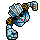 | スター・プラチナ + ストーン・フリー | 「愛＝理解」 | 共鳴で精神力が１上がっているぞ | 精神力+1 | 0.13 |
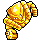 | スター・プラチナ + ザ・ワールド | 「オラオラ無駄無駄」 | 共鳴で最大HPが%d上がっているぞ | 最大HP+30 | 0.13 |
| スター・プラチナ + エコーズACT3 | 「本当に頼りになるやつだ」 | 共鳴で防御力が１上がっているぞ | 防御+1 | 0.13 | |
| スター・プラチナ + ザ・フール | 「協力してもらうぜ」 | 共鳴で時々敵を感知するぞ | 0.13 | ||
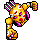 | スター・プラチナ + キッス | 「一緒に登ってきた」 | 共鳴で精神力が１上がっているぞ | 精神力+1 | 0.13 |
| スター・プラチナ + スタプラザワールド | 「お前は俺を怒らせた」 | 共鳴で攻撃力が３上がっているぞ | 攻撃修正+3 | 0.13 | |
| スタプラザワールド + クレイジー・D | 「狩り(ハンティング)に行こう！」 | 共鳴で射撃攻撃力が上がっているぞ | 0.13 | ||
| スタプラザワールド + ハーミットパープル | 「ジョースターの血統」 | 共鳴で精神力が１上がっているぞ | 精神力+1 | 0.13 | |
| スタプラザワールド + ストーン・フリー | 「愛＝理解」 | 共鳴で精神力が１上がっているぞ | 精神力+1 | 0.13 | |
| スタプラザワールド + ザ・ワールド | 「オラオラ無駄無駄」 | 共鳴で攻撃力が３上がっているぞ | 攻撃修正+3 | 0.13 | |
| スタプラザワールド + エコーズACT3 | 「本当に頼りになるやつだ」 | 共鳴で防御力が１上がっているぞ | 防御+1 | 0.13 | |
| スタプラザワールド + ザ・フール | 「協力してもらうぜ」 | 共鳴で時々敵を感知するぞ | 0.13 | ||
| スタプラザワールド + キッス | 「一緒に登ってきた」 | 共鳴で精神力が１上がっているぞ | 精神力+1 | 0.13 | |
| クレイジー・D + ザ・ハンド | 「気が合う二人」 | 共鳴で攻撃力が１上がっているぞ | 攻撃修正+1 | 0.13 | |
| クレイジー・D + エコーズACT3 | 「僕らの街 杜王町」 | 共鳴で精神力が１上がっているぞ | 精神力+1 | 0.13 | |
| クレイジー・D + ハーミットパープル | 「直さないからいい！」 | 共鳴で精神力が１上がっているぞ | 精神力+1 | 0.13 | |
| クレイジー・D + ハーヴェスト | 「友情のしるし！」 | 共鳴で落ちてるお金の金額が増えるぞ | 0.13 | ||
| クレイジー・D + パール・ジャム | 「注文の不思議な料理店！」 | 共鳴で腐った物でもおいしく食べるぞ | 0.13 | ||
| クレイジー・D + ハイウェイ・スター | 「追跡しろ！」 | 共鳴で時々敵を感知するぞ | 0.13 | ||
| ザ・ハンド + エコーズACT3 | 「僕らの街 杜王町」 | 共鳴で精神力が１上がっているぞ | 精神力+1 | 0.13 | |
| ザ・ハンド + ハーヴェスト | 「ハッピー＆メルヘン」 | 共鳴で落ちてるお金の金額が増えるぞ | 0.13 | ||
| ザ・ハンド + パール・ジャム | 「うンまぁ～い！」 | 共鳴で腐った物でもおいしく食べるぞ | 0.13 | ||
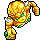 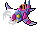 | G・エクスペリエンス + エアロスミス | 「チーム・ブチャラティ」 | 共鳴で精神力が１上がっているぞ | 精神力+1 | 0.13 |
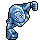 | G・エクスペリエンス + ムーディーブルース | 「チーム・ブチャラティ」 | 共鳴で精神力が１上がっているぞ | 精神力+1 | 0.13 |
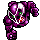 | G・エクスペリエンス + パープル・ヘイズ | 「チーム・ブチャラティ」 | 共鳴で精神力が１上がっているぞ | 精神力+1 | 0.13 |
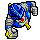 | G・エクスペリエンス + スティッキーフィンガーズ | 「夢のために！」 | 共鳴で精神力が２上がっているぞ | 精神力+2 | 0.13 |
| スティッキーフィンガーズ + エアロスミス | 「チーム・ブチャラティ」 | 共鳴で精神力が１上がっているぞ | 精神力+1 | 0.13 | |
| スティッキーフィンガーズ + ムーディーブルース | 「チーム・ブチャラティ」 | 共鳴で精神力が１上がっているぞ | 精神力+1 | 0.13 | |
| スティッキーフィンガーズ + パープル・ヘイズ | 「チーム・ブチャラティ」 | 共鳴で精神力が１上がっているぞ | 精神力+1 | 0.13 | |
| ムーディーブルース + エアロスミス | 「チーム・ブチャラティ」 | 共鳴で精神力が１上がっているぞ | 精神力+1 | 0.13 | |
| ムーディーブルース + パープル・ヘイズ | 「チーム・ブチャラティ」 | 共鳴で精神力が１上がっているぞ | 精神力+1 | 0.13 | |
| エアロスミス + パープル・ヘイズ | 「こいつにスパゲティを」 | 共鳴で精神力が２上がっているぞ | 精神力+2 | 0.13 | |
| シルバーチャリオッツ + アヌビス神 | 「達人二刀流」 | 攻撃修正+3 | 0.13 | ||
| シルバーチャリオッツ + マジシャンズレッド | 「はっはっは 狙え狙え」 | 共鳴で射撃命中率が上がっているぞ | 0.13 | ||
| マジシャンズレッド + ハーミットパープル | 「挟み撃ちの形」 | 共鳴で精神力が１上がっているぞ | 精神力+1 | 0.13 | |
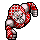 | キング・クリムゾン + スパイス・ガール | 「過去を乗り越える！」 | 共鳴で精神力が２上がっているぞ | 精神力+2 | 0.13 |
| キング・クリムゾン + エピタフ | 「絶頂の能力」 | 共鳴で罠にかからないぞ | 0.13 | ||
| ザ・ワールド + G・エクスペリエンス | 「ＤＩＯの血統」 | 共鳴で精神力が２上がっているぞ | 精神力+2 | 0.13 | |
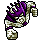 | ザ・ワールド + ホワイトスネイク | 「信頼できる友」 | 共鳴で精神力が３上がっているぞ | 精神力+3 | 0.13 |
| ザ・ワールド + クリーム | 「血をささげます」 | 共鳴で精神力が２上がっているぞ | 精神力+2 | 0.13 | |
| キラー・クィーン + ストレイ・キャット | 「空気が火を吹いた！」 | 共鳴で精神力が２上がっているぞ | 精神力+2 | 0.13 | |
| キラー・クィーン + シアーハートアタック | 「第２の爆弾」 | 共鳴で防御力が２上がっているぞ | 防御+2 | 0.13 | |
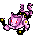 | キラー・クィーン + バイツァ・ダスト | 「第３の爆弾」 | 共鳴で最大HPが%d上がっているぞ | 最大HP+20 | 0.13 |
| シアーハートアタック + バイツァ・ダスト | 「キラークィーン」 | 共鳴で最大HPが%d上がっているぞ | 最大HP+20 | 0.13 | |
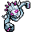 | ホワイトスネイク + ウェザーリポート | 「純潔の日々、戻らず！！」 | 共鳴で精神力が２上がっているぞ | 精神力+2 | 0.13 |
| ホワイトスネイク + ヘビー・ウェザー | 「ヤバイ「ＤＩＳＣ」がＩＮ！！」 | 共鳴で精神力が２上がっているぞ | 精神力+2 | 0.13 | |
| ストーン・フリー + ダイバーダウン | 「祝福しろ！」 | 共鳴で精神力が１上がっているぞ | 精神力+1 | 0.13 | |
| ストーン・フリー + ウェザーリポート | 「無重力の二人」 | 共鳴で精神力が１上がっているぞ | 精神力+1 | 0.13 | |
| ストーン・フリー + キッス | 「愛と復讐のキッス」 | 共鳴で精神力が１上がっているぞ | 精神力+1 | 0.13 | |
| ウェザーリポート + ダイバーダウン | 「幽霊部屋の仲間」 | 共鳴で精神力が１上がっているぞ | 精神力+1 | 0.13 | |
| ヘビー・ウェザー + ダイバーダウン | 「一人でリラックス」 | 共鳴で精神力が１上がっているぞ | 精神力+1 | 0.13 | |
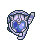 | ホワイトアルバム + メタリカ | 「暗殺チーム」 | 共鳴で攻撃力が１上がっているぞ | 攻撃修正+1 | 0.13 |
| ホワイトアルバム + グレイトフル・デッド | 「暗殺チーム」 | 共鳴で攻撃力が１上がっているぞ | 攻撃修正+1 | 0.13 | |
| メタリカ + グレイトフル・デッド | 「暗殺チーム」 | 共鳴で攻撃力が１上がっているぞ | 攻撃修正+1 | 0.13 | |
| ホワイトスネイク + ハイウェイ・トゥ・ヘル | 「真の邪悪」 | 共鳴で精神力が２上がっているぞ | 精神力+2 | 0.13 | |
| キッス + ハイウェイ・トゥ・ヘル | 「パンティーあげちゃうッ！」 | 共鳴で精神力が１上がっているぞ | 精神力+1 | 0.13 | |
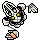 | キラー・クィーン + シンデレラ | 「整形手術」 | 共鳴で最大HPが%d上がっているぞ | 最大HP+20 | 0.13 |
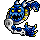 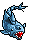 | ダークブルームーン + クラッシュ | 「水中へよ～こそ」 | 共鳴で攻撃力が２上がっているぞ | 攻撃修正+2 | 0.13 |
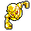 | チリペッパー + ウェザーリポート | 「雷で最大発電！」 | 共鳴で最大HPが%d上がっているぞ | 最大HP+10 | 0.13 |
| チリペッパー + ヘビー・ウェザー | 「雷で最大発電！」 | 共鳴で最大HPが%d上がっているぞ | 最大HP+10 | 0.13 | |
| チリペッパー + ドラゴンズドリーム | 「電気イスの刑」 | 共鳴で攻撃力が２上がっているぞ | 攻撃修正+2 | 0.13 | |
| ザ・ワールド + キング・クリムゾン | 「邪悪の化身」 | 共鳴で攻撃力が３上がっているぞ | 攻撃修正+3 | 0.13 | |
| ザ・ワールド + キラー・クィーン | 「邪悪の化身」 | 共鳴で攻撃力が３上がっているぞ | 攻撃修正+3 | 0.13 | |
| シルバーチャリオッツ + ザ・フール | 「暗黒空間の軌跡」 | 共鳴で透明なものが見えるぞ | 0.13 | ||
| スター・プラチナ + ダイバーダウン | 「気まずい二人」 | 共鳴で精神力が１上がっているぞ | 精神力+1 | 0.13 | |
| スタプラザワールド + ダイバーダウン | 「気まずい二人」 | 共鳴で精神力が１上がっているぞ | 精神力+1 | 0.13 |